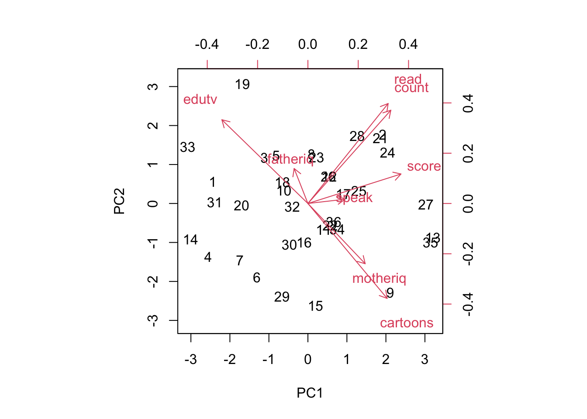

source("https://www.openintro.org/data/R/gpa.R")Homework 9
boxplot(gpa ~ gender, data = gpa)model <- lm(gpa ~ gender, data = gpa)
summary(model)
Call:
lm(formula = gpa ~ gender, data = gpa)
Residuals:
Min 1Q Median 3Q Max
-0.71126 -0.21126 0.03874 0.22624 1.11000
Coefficients:
Estimate Std. Error t value Pr(>|t|)
(Intercept) 3.61126 0.05156 70.044 <2e-16 ***
gendermale -0.05126 0.11038 -0.464 0.644
---
Signif. codes: 0 '***' 0.001 '**' 0.01 '*' 0.05 '.' 0.1 ' ' 1
Residual standard error: 0.3381 on 53 degrees of freedom
Multiple R-squared: 0.004052, Adjusted R-squared: -0.01474
F-statistic: 0.2156 on 1 and 53 DF, p-value: 0.6443The slope is -0.05126, which shows that being male will, on average, lower someone’s gpa by about 5% compared to being female.
\[ \mu_1 = \mu_2 \] \[ \mu_1 \neq \mu_2 \]
Where \(\mu_1\) is the avg gpa for a male and \(\mu_2\) is the avg gpa for a female.
The slope has a p-value of 0.664, which mean that we do not have evidence that the gpa is significantly different for male and female students.
pairs(gpa)None of the numerical variables look to be strong predictors for someone’s gpa. Studyweek might have some correlation (stronger than the rest), but it does not appear to be super strong.
model1 <- lm(gpa ~ studyweek + sleepnight + out + gender, data = gpa)
summary(model1)
Call:
lm(formula = gpa ~ studyweek + sleepnight + out + gender, data = gpa)
Residuals:
Min 1Q Median 3Q Max
-0.7588 -0.2328 -0.0019 0.2392 1.0943
Coefficients:
Estimate Std. Error t value Pr(>|t|)
(Intercept) 3.447124 0.349905 9.852 2.65e-13 ***
studyweek 0.001041 0.003870 0.269 0.789
sleepnight 0.005704 0.049714 0.115 0.909
out 0.052221 0.051920 1.006 0.319
gendermale -0.079773 0.117024 -0.682 0.499
---
Signif. codes: 0 '***' 0.001 '**' 0.01 '*' 0.05 '.' 0.1 ' ' 1
Residual standard error: 0.3435 on 50 degrees of freedom
Multiple R-squared: 0.03017, Adjusted R-squared: -0.04741
F-statistic: 0.3889 on 4 and 50 DF, p-value: 0.8156On average, sleeping one more hour per night will increase someone’s gpa by 0.57% holding the other variables constant.
On average, being male decreases someone’s gpa by 7.98% compared to being female, holding the other variables constant.
There is not a linear relationship between gpa and the number of hours slept per night accounting for the other predictor variables as the p-value is 0.909.
model_s <- lm(gpa ~ out, data = gpa)
summary(model_s)
Call:
lm(formula = gpa ~ out, data = gpa)
Residuals:
Min 1Q Median 3Q Max
-0.74055 -0.20533 0.00945 0.24760 1.02945
Coefficients:
Estimate Std. Error t value Pr(>|t|)
(Intercept) 3.50425 0.10615 33.011 <2e-16 ***
out 0.04543 0.04553 0.998 0.323
---
Signif. codes: 0 '***' 0.001 '**' 0.01 '*' 0.05 '.' 0.1 ' ' 1
Residual standard error: 0.3356 on 53 degrees of freedom
Multiple R-squared: 0.01844, Adjusted R-squared: -7.76e-05
F-statistic: 0.9958 on 1 and 53 DF, p-value: 0.3229All of the variables remain insignificant, even after removing the most significant one-by-one. The most significant variable to remain is out, which measures the number of nights they go out in a week.
source("https://www.openintro.org/data/R/gifted.R")pca_result <- prcomp(gifted, scale = TRUE)
pca_resultStandard deviations (1, .., p=8):
[1] 1.7085693 1.3248804 1.1190890 0.9764014 0.9010757 0.4181202 0.2885986
[8] 0.2229611
Rotation (n x k) = (8 x 8):
PC1 PC2 PC3 PC4 PC5 PC6
score 0.46244518 0.1466578 -0.4233724 0.03143415 0.15546385 0.7189505
fatheriq -0.06840077 0.1738034 -0.6528753 0.16501316 -0.66807218 -0.2514263
motheriq 0.28465196 -0.2995546 -0.4747599 0.13874492 0.56778636 -0.4938951
speak 0.18442374 0.0211772 -0.1296844 -0.95563399 -0.07027483 -0.1370300
count 0.41202893 0.4637048 0.2020288 0.17267266 0.01032100 -0.2158762
read 0.39869121 0.4969825 0.2075188 0.01753807 -0.02982605 -0.2415155
edutv -0.42747086 0.4163734 -0.1265463 -0.06338343 0.36537719 -0.1566454
cartoons 0.39366619 -0.4719343 0.2289126 0.07179956 -0.26018080 -0.1664791
PC7 PC8
score -0.10818536 -0.17787822
fatheriq -0.01199022 -0.04425785
motheriq 0.02381170 0.13308834
speak 0.10087753 -0.03991229
count 0.65617463 -0.25943085
read -0.61875911 0.32954506
edutv -0.27451963 -0.62487692
cartoons -0.29769092 -0.61702481The first principal component explains 2.92 (out of a total of 8) of the variance.
plot(pca_result, type = 'l')I think that 5 principal components are all that are needed to capture most of the variance of the data. After 5, the amount of variance is very small, below 0.5.
biplot(pca_result, scale = 0)